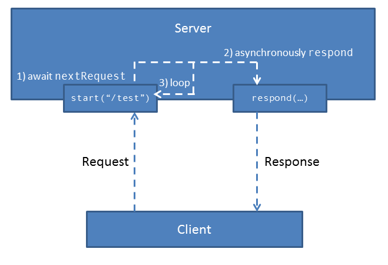

NodeScala: Instructions Help Center
Attention: You are allowed to submit an unlimited number of times! for grade purposes. Once you have submitted your solution, you should see your grade and a feedback about your code on the Coursera website within 20 minutes. If you want to improve your grade, just submit an improved solution.
In this exercise you will implement a simple asynchronous server using Scala Futures. To get started, download the
nodescala.zip handout archive file and extract it somewhere on your machine.
Part 1: Extending Futures
In the first part of the exercise you will extend the Futures and
Promises API with some additional methods. We will define these methods
in the file package.scala.
Extension Methods on Futures
In Scala you can add missing methods to existing classes and singleton objects. Let's say you want to have a new method userInput in the Future companion object that returns a future that reads user input until the ENTER key is pressed. The Future
companion object is already baked into the standard library, so you
cannot add a method there directly. Here is an example how you can add userInput using extension methods:
implicit class FutureCompanionOps(f: Future.type) extends AnyVal {
def userInput(message: String): Future[String] = Future {
readLine(message)
}
}The implicit modifier on the class declaration above means that the compiler will generate an implicit conversion from the Future companion object to the FutureCompanionOps object. The declaration above is desugared into:
class FutureCompanionOps(f: Future.type) extends AnyVal {
def userInput(message: String): Future[String] = Future {
readLine(message)
}
}
implicit def f2ops(f: Future.type) = new FutureCompanionOps(f)This implicit conversion will be called every time you call a non-existing method on the Future companion object - Future.userInput thus automatically becomes f2ops(Future).userInput. The extends AnyVal part is just an optimization telling the compiler to avoid instantiating the FutureCompanionOps object where possible and call its methods directly.
The bottom line is that whenever you want to add missing methods to an already existing class (or object) implementation, you should use this pattern.
Let's see a simple example of how to implement an additional combinator on an instance of Future[T]. This combinator should take the current future f and the target future that and produce a new future that is completed with the value of the f if and only if the that future completes successfully. If that does not complete successfully, the resulting future should be completed with its exception. We will call this combinator ensuring. Here is how you could implement it:
implicit class FutureOps[T](f: Future[T]) {
def ensuring[S](that: Future[S]): Future[T] = {
val p = Promise[T]()
f onComplete {
case tryValue =>
that onComplete {
case Success(_) =>
p.complete(tryValue)
case Failure(exception) =>
p.failure(exception)
}
}
p.future
}
}You start by creating a promise object p. The method ensuring will return a future corresponding to that promise. Then we install a callback to f using onComplete - when f completes with either success or a failure tryValue (either Success or Failure), it will install an additional callback to that. This additional callback will complete the promise p with either the exception if that fails, or with tryValue if that succeeds.
Companion objects often contain factory methods for object creation. You will now add the following methods to the Future companion object - see the ScalaDoc comments in the source code for an explanation what each of these must do:
def always[T](value: T): Future[T] // hint - use a Promise to implement this!
def never[T]: Future[T] // hint - use a Promise to implement this!
def any[T](fs: List[Future[T]]): Future[T] // hint - use a Promise
def all[T](fs: List[Future[T]]): Future[List[T]] // hint - see the lectures
def delay(t: Duration): Future[Unit]In the same way, add the following methods to Future[T] instances (again, see the ScalaDoc comments in the source code):
def now: T // hint - use Await.result to implement this. What should be the time out ?
def continueWith[S](cont: Future[T] => S): Future[S]
def continue[S](cont: Try[T] => S): Future[S]We will use the factory methods and combinators defined above later in the exercise.
Use any construct you see most appropriate for the task when
implementing these factory methods. For instance, you can use existing
future combinators, for-comprehensions, Promises or async/await. You may use Await.ready and Await.result only when defining the delay factory method and the now method on Futures. All the methods except delay should be non-blocking. The delay
may block the execution thread of its future until the specified time
period elapses, but it should not block the caller thread.
Note that whenever you have a long-running computation or blocking make sure to run it inside the blocking construct. For example:
blocking {
Thread.sleep(1000)
}is used to designate a piece of code as potentially blocking. An
asynchronous computation that has a blocking construct is typically
scheduled in a separate thread to avoid potential deadlock. Example:
let's say you have a future f that waits on a timer or for a resource or a monitor condition that can only be fulfilled by some other future g. In that case, the part of the code in f that does the waiting should be wrapped in the blocking, otherwise the future g might never be run.
Adding Cancellation
Standard Scala Futures cannot be cancelled. Instead,
cancelling an asynchronous computation requires a collaborative effort,
in which the computation that is supposed to be cancelled periodically
checks a condition for cancellation.
In this part of the exercise we will develop support for easier cancellation. We introduce the following traits:
trait CancellationToken {
def isCancelled: Boolean
}The CancellationToken is an object used by long running asynchronous computation to periodically check if they should cancel what they are doing. If isCancelled returns true, then an asynchronous computation should stop.
trait Subscription {
def unsubscribe(): Unit
}Subscriptions are used to unsubscribe from an event. Calling unsubscribe means that the Subscription owner (e.g. the method that calls unsubscribe) is no longer interested in the asynchronous computation, and that it can stop.
trait CancellationTokenSource extends Subscription {
def cancellationToken: CancellationToken
}The CancellationTokenSource is a special kind of Subscription that returns a cancellationToken which is cancelled by calling unsubscribe. After calling unsubscribe once, the associated cancellationToken will forever remain cancelled.
Here is how to implement the default CancellationTokenSource:
object CancellationTokenSource {
def apply(): CancellationTokenSource = new CancellationTokenSource {
val p = Promise[Unit]()
val cancellationToken = new CancellationToken {
def isCancelled = p.future.value != None
}
def unsubscribe() {
p.trySuccess(())
}
}
}In the above implementation, a Promise p is used to implement the CancellationTokenSource. This interface requires implementing 2 methods - cancellationToken and unsubscribe. The unsubscribe method is meant to be called by clients to let the computation know that it should stop. It tries to complete the promise p in case it wasn’t already completed. The cancellationToken method simply returns a CancellationToken that queries the state of the promise p in its isCancelled method. The computation can periodically query isCancelled to check if it should be cancelled.
We use the above-defined method to implement a method run on the Future companion object that starts an asynchronous computation f taking a CancellationToken and returns a subscription that cancels that CancellationToken:
def run()(f: CancellationToken => Future[Unit]): Subscription = ???Clients can use Future.run as follows:
val working = Future.run() { ct =>
Future {
while (ct.nonCancelled) {
println("working")
}
println("done")
}
}
Future.delay(5 seconds) onSuccess {
case _ => working.unsubscribe()
}The above code snippets cancels the asynchronous computation working after five seconds.
Part 2: An Asynchronous HTTP Server
Finally, you have everything you need to write an asynchronous HTTP Server. The HTTP server will asynchronously wait on some port
for incoming HTTP requests and then respond to them by sending some
text or HTML back. You will be able to open your browser at the address http://localhost:8191/someRelativepath and see how your server responds to you!
Open the file nodescala.scala. There you will find the following declarations:
type Request = Map[String, List[String]]
type Response = Iterator[String]Each HTTP request consists of a sequence of headers that are
key-value pairs. Same keys may occur in multiple headers in the same
HTTP requests, so we encode the request as a Map mapping a key to a List of all corresponding header values.
Each HTTP response will be just some text. We could thus represent Response with a String. We will instead represent it with an Iterator[String] so that we can respond chunk by chunk if the entire text or an HTML document is very big.
The trait Exchange is used to write your response back to the user using the write method.
Once you implement your server, you will be able to instantiate a server listening at a port p like this:
val myServer = new NodeScala.Default(p)After that, you will be able to instruct the server to listen for requests at a specific relative path "/home":
val homeSubscription = myServer.start("/home") {
req => "Have a nice day!".split(" ").iterator // response to the request
}Let's now get started with implementing the server.
HTTP Listener
Every HTTP server creates multiple Listener objects, one for every relative path on which it listens for requests. These Listeners wait for incoming HTTP requests and create Request and Exchange objects for each incoming request.
We have provided the implementation of the Listener object that provides convenient interfaces, such as start and nextRequest,
for starting a listener and getting the next request. Observe that even
though the methods return Futures, they are implemented using the
standard HTTP library of the JVM, which uses a traditional
callback-based API. For instance, look at the implementation of the nextRequest method (defined in the Listener trait). It creates an empty Promise p to hold the (Request, Exchange) pair, registers a callback function using the createContext method that when invoked (by an HttpServer instance) completes the promise by computing Request and Exchange, and returns the Future of the Promise p.
This pattern in which a callback completes a Promise is used to
translate an event into a Future, and is ubiquitous in reactive
programming with Futures.
(For interested students, here is some documentation on how createContext and removeContext methods of the HttpServer class work.)
The HTTP Server
In this part you will implement the two server methods start and respond of the trait NodeScala in the file nodescala.scala.
The respond method is used to write the response back to the client using an exchange object. While doing so, this method must periodically check the token to see if the response should be interrupted early, otherwise our server might run forever!
private def respond(exchange: Exchange, token: CancellationToken, response: Response): UnitYour task is to implement the method respond. Do not forget to call the close method of exchange after the entire response has been written.
To start the HTTP server, we declare a single method start in file nodescala.scala:
def start(relativePath: String)(handler: Request => Response): SubscriptionThis method takes a relativePath at which a request arrives and a request handler. It creates a listener at relativePath and runs the following cancellable computation using Future.run: if the computation is not cancelled, awaits the nextRequest from the listener, responds to it asynchronously using respond and keeps repeating this until the computation is cancelled.
Finally, method start returns a Subscription that cancels all asynchronous computations at this relative path.
Your task is to implement start using Futures in the following way:
create and start a http listener on the
relativePath. For example, using the following code:val listener = createListener(relativePath) val listenerSubscription = listener.start()- create a cancellable asynchronous computation using the
Future.runcompanion method, which, while the token is not cancelled, awaits the next request from the listener and then responds to it asynchronously  have the method
startreturn a subscription that can be used to cancel (i.e, unsubscribe) the http listener, the server loop and any responses that are in progress (hint: use one of theSubscriptioncompanion methods)
Instantiating the Server
Finally, you can instantiate the server in the file Main.scala. The main method first creates a server myServer on port 8191 and starts listening on a relative path /test, as implemented. It then creates a userInterrupted future that is completed when the user presses ENTER, and is continued with a message "You entered... ". Complete the remaning part of the main method which are described below:
- Create a
timeOutfuture that is completed after 20 seconds, continued with a message"Server timeout!" - Create a
terminationRequestedfuture that is completed once any of the two futuresuserInterruptedortimeOutcompletes. - Once the
terminationRequestedcompletes, print its message, unsubscribe frommyServerand print"Bye!"
Hint: where possible, use the previously defined Future factory methods and combinators.
Open your browser and type http://localhost:8191/test into the address bar. Congratulations your server is fully functional!